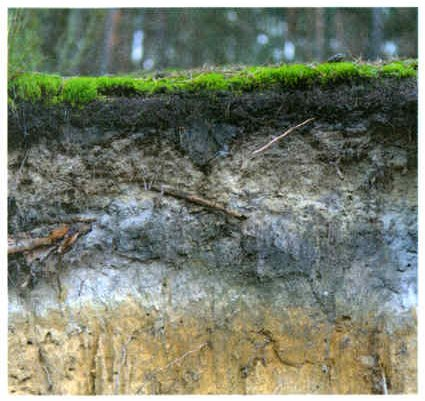
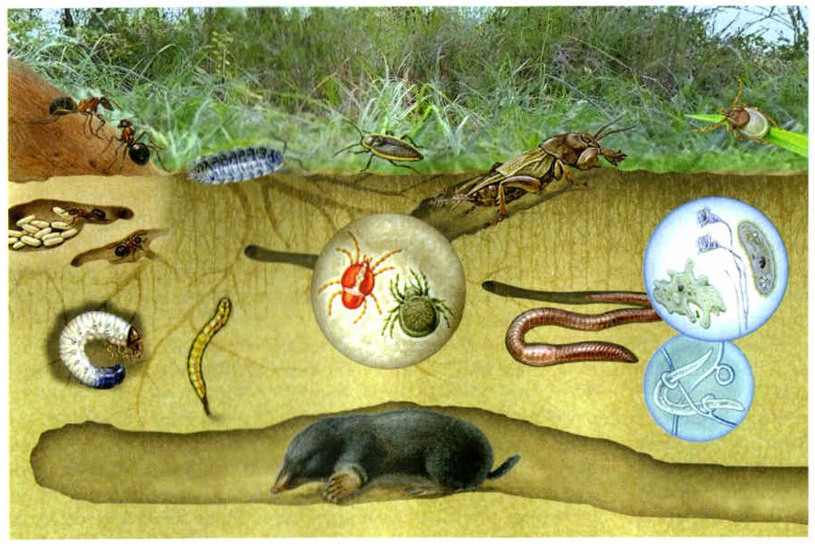
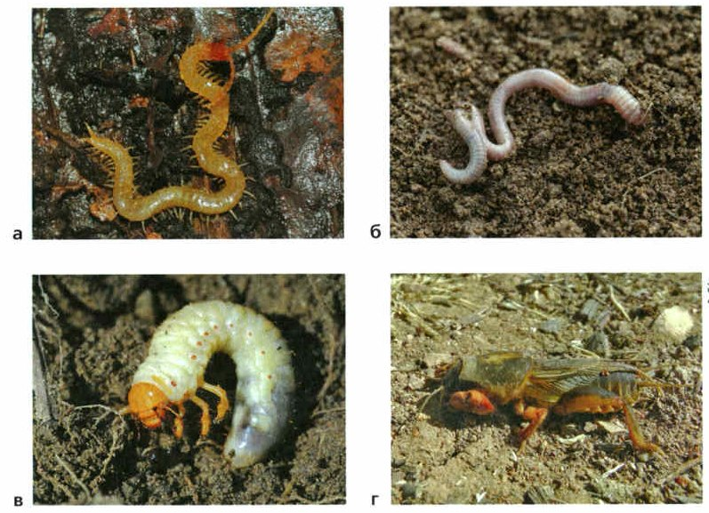

Из чего состоит почва
Почва — это природное образование: сложная смесь минеральных, органических и органо-минеральных веществ. Почва — что-то среднее между водной и наземно-воздушной средой. Как образуется почва, называют почвообразованием.
Почва — тонкий верхний слой суши, который переработали живые существа. В одном грамме луговой почвы — это щепотка земли — живёт до 1,5 миллиона организмов: бактерии, черви, клещи, личинки насекомых. Но по массе почва на 90% неживая: минералы, вода и другое.
Между твёрдыми частицами есть поры и полости. В них — вода с растворёнными веществами или воздух. Корни растений всасывают эти растворы. Многие почвенные животные живут только во влажной почве. Но если воды слишком много, она вытесняет из пор воздух, а воздух почве необходим.
Воздух в почве влажный, в нём больше углекислого газа и меньше кислорода, чем снаружи. Этим жизнь в почве похожа на жизнь в воде.
В почву всё время попадают органические вещества: отмершие корни и опавшие листья. Это ценный источник энергии для растений и многих почвенных животных. Роющие животные перемешивают почву, а после смерти сами становятся пищей для микроорганизмов.
Состав почвы. Почва — это природное образование, представляющее собой сложную смесь минеральных, органических и органо-минеральных веществ. Почва занимает промежуточное положение между водной и наземно-воздушной средой. Процесс образования почв называют почвообразованием.
Почва представляет собой верхний тонкий слой поверхности суши, переработанный деятельностью живых существ. В 1 г луговой почвы обитает до 1,5 млн организмов, среди которых бактерии, черви, клещи, многочисленные личинки насекомых. По массе почва на 90% состоит из минералов, воды и других неживых образований. Твёрдые частицы пронизаны в почве порами и полостями, частично заполненными водными растворами или воздухом. Объём мелких полостей в почве является очень важной характеристикой почвы.
Водные растворы всасываются из почвы корнями растений и обеспечивают процессы их жизнедеятельности. Многие почвенные животные могут жить только во влажной почве. Но если воды в почве слишком много, то она вытесняет содержащийся в порах воздух. Он является неотъемлемой частью почвы. В почвенных полостях воздух насыщен водяными парами, а состав его обогащён углекислым газом и обеднён кислородом. Этим условия жизни в почве напоминают водную среду.
Важной особенностью почвы является постоянное поступление органического вещества за счёт отмирающих корней растений и опадающей листвы. Это ценный источник энергии для растений и многих почвенных животных. Роющие животные перемешивают почвенную массу, а после смерти становятся источником органического вещества для микроорганизмов.
Сначала сделай опыт и нарисуй, что увидела.
1. Из чего состоит почва?
2. Чем условия жизни в почве напоминают водную среду?
Структура почвы
Возьми немного верхнего слоя почвы и раскроши — он распадётся на комочки. Бывают крупные, до 20 см, а бывают мелкие, как пыль. По форме и размеру комочков описывают структуру почвы.
Структуру создают погода и живые организмы. Почва то намокает, то высыхает, то замерзает, то оттаивает — и частицы дробятся. Растущие корни делят плотную землю на комочки и скрепляют их сеточкой мелких корешков. А выделения корней и вещества, которые получаются при разложении, склеивают мелкие частицы (рис. 88).
Глубина почвы — там, куда доходят корни растений и роющие животные. Это не больше 1,5—2 метров.
Структура почвы. Если взять из верхнего слоя почвы небольшой образец и раскрошить его, то он распадётся на комочки. Они могут быть крупными, размером до 20 см и мелкими, похожими на пыль. Исходя из формы и размеров этих комочков характеризуют структуру почвы.
На формирование структуры почвы влияют изменения температуры и влажности. Почва то увлажняется, то иссушается, то замерзает, то оттаивает. В результате почвенные частицы дробятся.
В формировании структуры почвы участвуют корневые системы растений и почвенные организмы. Растущие корни расчленяют плотную почвенную массу на комочки и скрепляют их сетью мелких корешков. Корневые выделения и продукты разложения склеивают мелкие частицы почвы (рис. 88).
Глубина почвы определяется глубиной проникновения корней растений и деятельностью роющих животных. Она составляет не более 1,5—2 м.

▲ Найди тёмный верхний слой — в нём больше всего гумуса.
3. Как определяют структуру почвы?
4. Кто и что участвует в образовании структуры почвы?
Плодородие и гумус
С тем, насколько почва хороша для роста растений, связано её плодородие. Его повышает особое органическое вещество — гумус (от лат. гумус — земля, почва), или перегной. Чем больше в почве гумуса, тем она темнее — тёмно-коричневая или чёрная. С глубиной гумуса становится меньше.
Плодородие — понятие относительное. В природе о нём судят по тому, сколько растений и какой массы вырастает на одном гектаре (рис. 89). Одна и та же почва хороша для одних растений и плоха для других: на болотных почвах отлично растут болотные растения, а степные там расти не могут.
Плодородие. Со всеми свойствами почвы, обеспечивающими наиболее благоприятные условия для роста и развития растения связано плодородие. Его повышает особое органическое вещество почвы — гумус (от лат. гумус — земля, почва). От того, сколько гумуса (перегноя) содержится в почве, во многом зависит её цвет. Гумус придаёт почве тёмно-коричневый или чёрный цвет. С глубиной количество гумуса в почве уменьшается.
Плодородие почвы понятие относительное. О плодородии почвы в естественной природной среде судят по количеству и массе всех живых растений, произрастающих на площади, равной 1 гектару (рис. 89). Одна и та же почва может быть плодородной для одних растений и малоплодородной для других. Например, болотные почвы высокоплодородны по отношению к болотным растениям, но степные растения на них расти не могут.

▲ Найди крота, дождевого червя и личинку жука. А кто показан в кружках, как под лупой?
5. От чего зависит цвет почвы?
6. Почему плодородие почвы — понятие относительное?
Обитатели почвы
Всех, кто живёт в почве, называют почвенными организмами. Их делят на группы по размеру.
Первая группа — микроорганизмы: бактерии, грибы, одноклеточные растения и животные. Они живут в порах и полостях почвы и на поверхности её частиц. В одном кубометре почвы их больше 100 миллиардов! Больше всего — в верхнем слое. Промерзание почвы они переносят, но зимой работают очень медленно.
Вторая группа — животные, которых хорошо видно только в лупу: мелкие личинки насекомых, коловратки, тихоходки, клещи, ногохвостки.
Третья группа — те, кого видно просто глазом (рис. 90): крупные насекомые и дождевые черви. В квадратном метре почвы живут сотни дождевых червей. Они роют ходы толщиной 3—7 мм, и по этим ходам в почву проходят вода, воздух и корни. Черви глотают остатки растений и комочки почвы, а их выделения — отличная среда для почвенных микроорганизмов. Где много червей, почва рыхлая и богата гумусом.
Всю жизнь в почве проводят крупные роющие звери — кроты и слепыши. Крот на одном гектаре перекапывает от 4 до 55 тонн земли! А суслики, сурки, тушканчики, дикие кролики и барсуки кормятся наверху, а в норах отдыхают и выводят детёнышей. Роя норы, они перемешивают почву — и она становится плодороднее.
На зиму многие обитатели почвы уходят глубже. На севере дождевые черви роют ходы глубиной до 1,5 м и затаскивают туда кусочки сухой травы.
Обитатели почвы. Исходя из величины обитателей почвы можно разделить на несколько групп. К первой группе относятся микроорганизмы: бактерии, грибы, одноклеточные растения и животные. Они обитают в почвенных порах и полостях или на поверхности почвенных частиц. В среднем на 1 м³ почвенного слоя приходится более 100 млрд микроорганизмов. Они способны переносить промерзание почвы, но их активность при этом значительно снижается. Большое количество микроорганизмов содержится в верхнем слое почвы.
Ко второй группе относятся животные, которых можно хорошо рассмотреть только с помощью лупы. Это небольшие личинки насекомых, коловратки, тихоходки, клещи, ногохвостки.
Третью группу составляют животные, которые хорошо различимы невооружённым глазом (рис. 90). Это крупные насекомые и дождевые черви.
На 1 м² почвы обнаружены миллионы червей — коловраток, десятки миллионов нематод, сотни тысяч клещей и первичнобескрылых насекомых, сотни дождевых червей. Передвигаясь в толще почвы дождевые черви пронизывают её сетью ходов диаметром 3—7 мм. Эти ходы способствуют структурированию почвы, проникновению в неё влаги, воздуха и корней растений. Дождевые черви заглатывают и пропускают через своё тело растительные остатки и почвенные комочки. Выделения червей служат благодатной средой для развития почвенных микроорганизмов. Там, где много дождевых червей, почва имеет хорошую структуру и обогащена гумусом.
Всю жизнь проводят в почве довольно крупные роющие животные — кроты и слепыши. Обыкновенные кроты способны перерыть на площади 1 га от 4 до 55 т почвы.
Кормятся на поверхности почвы, а отдыхают и размножаются в норах суслики, сурки, тушканчики, дикие кролики, барсуки. Устраивая в почве норы, они способствуют перемешиванию почвы, что благоприятно сказывается на плодородии.
На зиму многие обитатели почвы перемещаются в более глубокие её слои. Например, в северных районах дождевые черви выкапывают ходы на глубине до 1,5 м и натаскивают туда кусочки сухой травы.

▲ Посмотри на передние лапы медведки — ими она роет землю, как крот.
7. На какие группы делят обитателей почвы по размеру?
8. Чем полезны дождевые черви?
9. Как роющие звери влияют на почву?
Итоги и «Моя лаборатория»
Почва · Структура почвы · Плодородие · Гумус · Почвенные организмы
- Из чего состоит почва?
- Как определяют структуры почвы?
- Почему гумус повышает плодородие почв?
- Как живые организмы обитают в почве?
- Чем питаются почвенные животные?
- Назовите особенности почвы, которые сближают её с водной средой.
Почему плодородие почв является относительным?
- Цель работы: выявить черты приспособленности организмов к среде обитания.
- Материалы и оборудование: гербарные образцы растений, комнатные растения, коллекции насекомых, чучела птиц и млекопитающих.
- Ход работы. Рассмотрите растения и животных, предложенных вам для исследования. Определите среду обитания каждого организма.
- Опишите черты приспособленности организмов к среде обитания.
- Запишите в тетради выводы по результатам наблюдений.
Сначала попробуй сама, потом сравни.
Муравьи — почва и наземно-воздушная среда: роют ходы, тело покрыто твёрдым наружным скелетом.
Дождевой червь — почвенная среда: тело длинное, гибкое, без ног — как раз для узких ходов.
Денежное дерево — корни в почве, листья в воздухе: листья ловят свет, а толстые мясистые листья запасают воду. На его родине, в Африке, бывает сухо.
Лягушка — водная и наземно-воздушная среда: влажная кожа, перепонки на задних лапах для плавания, сильные ноги для прыжков.
Основатель науки о почве — почвоведения — великий русский учёный Василий Васильевич Докучаев. Он много лет изучал чернозёмы и считал их богатством России. В 1883 году вышла его книга «Русский чернозём». Докучаев доказал: любая почва образуется на горной породе, а на то, какой она получится, влияют климат, растения и животные этой местности.
Основателем науки о почве является великий русский учёный Василий Васильевич Докучаев. Он много лет посвятил изучению чернозёмных почв и считал их богатством России. В 1883 году был опубликован его труд «Русский чернозём», в котором заложены основы современного почвоведения. Докучаев доказал, что всякая почва возникает на материнской горной породе. При этом на образование почвы влияют климат, растительный покров и животный мир, населяющий определённую территорию.
Проверь себя
Ошиблась — не страшно, попробуй другую кнопку.
Бактерии
Это микроорганизмы.
Ногохвостки
Вторая группа обитателей почвы.
Дождевой червь
Рис. 90, б.
Тихоходки
Вторая группа обитателей почвы.
Личинка майского жука
Рис. 90, в.
Одноклеточные животные
Это микроорганизмы.
Медведка
Рис. 90, г.
Чем больше гумуса, тем почва темнее
Гумус придаёт почве тёмно-коричневый или чёрный цвет.
Почва почти целиком состоит из живых организмов
По массе почва на 90% — минералы, вода и другое неживое.
В воздухе почвы меньше кислорода, чем снаружи
И больше углекислого газа.
Одна и та же почва плодородна для всех растений
Плодородие — понятие относительное.
Кроты проводят в почве всю жизнь
Как и слепыши.
1. Сколько организмов живёт в 1 г луговой почвы?
2. От чего во многом зависит цвет почвы?
3. Какой толщины ходы дождевых червей?
4. Кто доказал, что почва образуется на горной породе?
5. Чем жизнь в почве похожа на жизнь в воде?
6. Как глубоко на севере уходят на зиму дождевые черви?
Расскажи вслух
Состав и структура почвы
- Почва — верхний слой суши, переработанный живыми существами; смесь минеральных и органических веществ.
- В порах — вода и воздух; воздух влажный, с углекислым газом — похоже на водную среду.
- Структура — комочки; её создают погода, корни, почвенные организмы.
Плодородие и гумус
- Плодородие — свойства почвы, которые дают растениям лучшие условия для роста.
- Гумус (перегной) повышает плодородие и делает почву тёмной; Докучаев и «Русский чернозём».
- Плодородие относительно: болотные почвы хороши для болотных растений, но не для степных.
Обитатели почвы
- Микроорганизмы, мелкие животные (в лупу), крупные насекомые и дождевые черви.
- Черви роют ходы, улучшают структуру и обогащают почву гумусом.
- Кроты и слепыши живут в почве всю жизнь; суслики, сурки, барсуки — в норах.